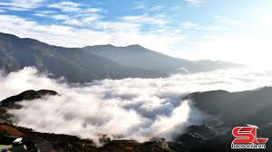
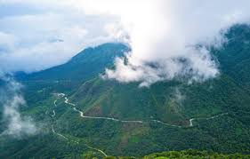

Hành trang
Áo phao lông vũ, miếng dán giữ nhiệt và một đôi giày leo núi có độ bám tốt là 3 thứ "bất di bất dịch" phải có.
Ký sự của một kẻ mộng mơ
Nơi lưu giữ những khoảnh khắc đứng trên đỉnh ngàn mây, cảm nhận cái lạnh thấu xương của vùng cao và ngắm nhìn đại dương mây bồng bềnh cuộn sóng.
Bắt đầu hành trìnhMình chọn chủ đề "Săn mây" vì đây không chỉ là một sở thích, mà là một hành trình thử thách lòng kiên trì. Để bắt được một khoảnh khắc mây tràn thung lũng, có khi phải thức dậy từ 4 giờ sáng, vượt qua những con đèo dốc đứng và chịu đựng cái lạnh dưới 10°C.
Website này dành cho những tâm hồn yêu tự do, thích dịch chuyển và muốn tìm kiếm kinh nghiệm thực tế cho những chuyến đi vùng cao. Qua đây, mình muốn chia sẻ vẻ đẹp nguyên sơ của núi rừng Việt Nam và truyền cảm hứng xách ba lô lên và đi cho các bạn trẻ.
Mây không đợi một ai. Có những ngày đi đường mòn sương mù dày đặc không thấy lối, nhưng chỉ cần kiên nhẫn leo lên thêm một cao độ nữa, cả một biển mây lộng lẫy đột ngột vỡ òa trước mắt.
"Phần thưởng lớn nhất của việc leo núi không phải là đỉnh cao, mà là cái nhìn bao dung hơn với thế giới khi đứng giữa đại dương mây trời."
Áo phao lông vũ, miếng dán giữ nhiệt và một đôi giày leo núi có độ bám tốt là 3 thứ "bất di bất dịch" phải có.
Từ tháng 10 đến tháng 4 năm sau là "mùa vàng" để săn mây Tây Bắc khi độ ẩm cao và trời lạnh sâu.
Tà Xùa (Sơn La), Lảo Thẩn (Lào Cai), và Đèo Ô Quy Hồ (Lai Châu) là những thánh địa mây không thể bỏ lỡ.


Chia sẻ chi tiết lịch trình di chuyển bằng xe máy từ Hà Nội, các điểm dừng chân chụp ảnh đẹp nhất và cách chọn homestay có view mở cửa sổ ra là thấy mây tràn vào phòng.